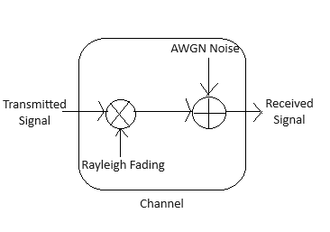

Calculation of BER vs. SNR for BASK Simulation (with AWGN + Rayleigh)
Enter SNR value in dB:
Enter the number of Multi-paths:
Excess Delay (in ms):
Bit Rate (bps):
Symbol duration (ms):
Calculate BER
Plot BER vs. SNR
Plot Constellation

Generate Message
Generate Carrier
Generate BASK
Signal
Generate Multi-path for Rayleigh
Add AWGN Noise
Received Signal
Received Signal
without Rayleigh
Calculate and Plot BER vs SNR
Back to Top
BER vs SNR (AWGN + Rayleigh)
SNR (dB)
BER
BER vs SNR (AWGN only)(without Rayleigh
SNR (dB)
BER